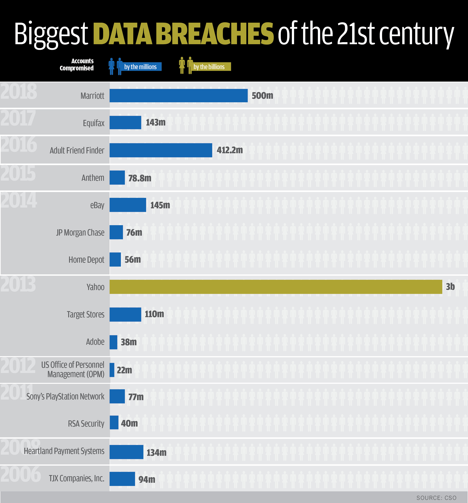

Personal data is an important factor in our decision making. A government or corporation with copious amounts of your personal data can utilize it to manipulate you. For example, a companies like Google, Amazon, and Facebook make use of your personal data to display targeted advertising to you based on your interests. However, personal data in the wrong hands can be used for incredibly nefarious purposes. Information about one's personal life can affect their reputation, and it can be used against us as blackmail or as a psychological influence on our behaviour.
This concern is amplified by the fact that none of this data collected on an individual is truly safe. While companies may claim that your data is truly safe, they can never guarantee this. For example, a company may experience a data breach and have a lot of their data stolen from them. This puts your data in the hands of unscrupulous individuals, which can be anything from your name and email to your banking information, depending on what data is stolen and who the data is stolen from.
In many cases, much of this data had been collected from these individuals without their awareness. If these websites had respected the privacy of these individuals and not collected their data, this information would not have been at risk.
There are a few notable examples of where this data has been stolen from this companies and put users at risk:
- In 2017, the credit analysis company Equifax experienced a major data breach concerning over 143 million individuals spread across the United States, Canada, and the UK. The data stolen from these individuals included names, social security numbers, addresses, credit card numbers, and much more. The damage caused by the massive data breach was estimated to have cost over $439 million dollars (Source: PYMNTS).
- In 2013, the website Yahoo! experienced a massive data breach that compromised all of its over 3 billion user accounts. The data breach exposed the usernames and passwords of these accounts, as well as the names, birth dates, and phone numbers of these users. The cost of this data breach was estimated to have cost over $350 million dollars and this data breach remains the largest to have ever occurred to this day (Sources: New York Times, Network World).
- In 2011, Sony's Playstation Network experienced a data breach that compromised over 77 million accounts. Along with preventing users from accessing the service for an extended period of time, the data breach also compromised the accounts of those users. At the time, it was considered to be the largest data breach to have ever occurred. The personal details of these users, including their credit card information, was stolen. At the time, Sony found themselves the target of scrutiny for not warning users of the data breach until a week after it had happened, which had violated multiple laws around the world (such as the Data Protection Act in the UK, which requires individuals to be notified of a data breach within 72 hours of it occurring). The cost of this data breach was estimated to be over $171 million dollars (Sources: Reuters, CBS News).
A chart containing details of data major data breaches and the number of affected users since 2006 can be found on the right (Image Credit: CSO). |
 |